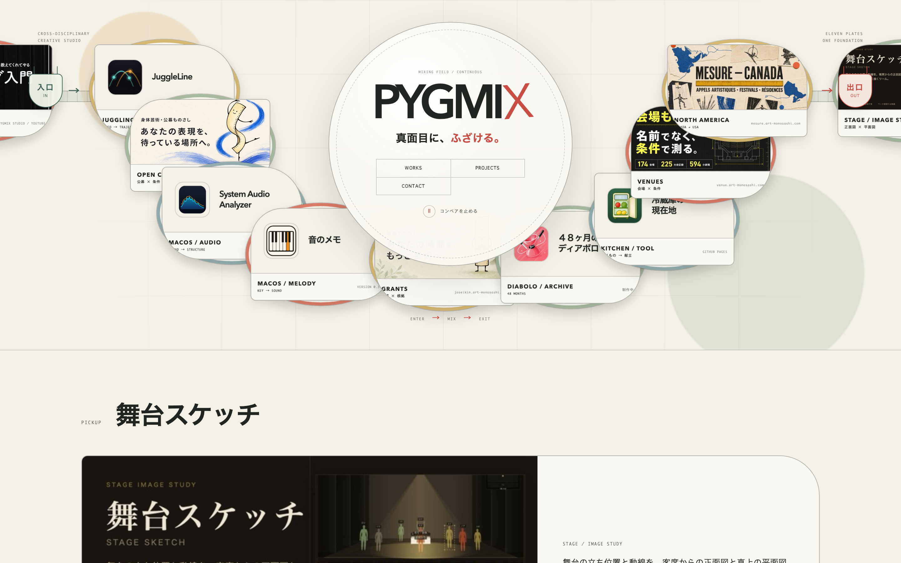
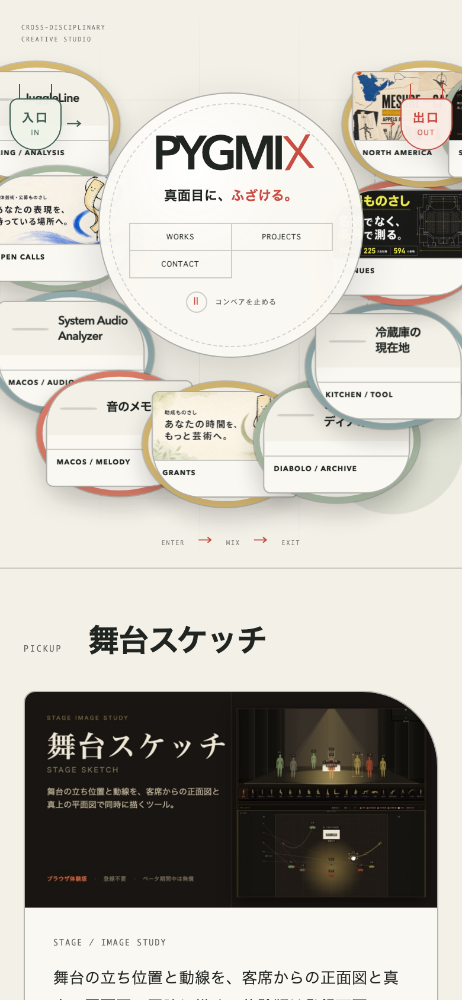

「倍」＝約 640×336px。1440×900 のヒーローに、その大きさが入る場所はありません。
| 置き場所の候補 | 結果 実測 |
|---|---|
| 円の上・中央 | 画面外（y −145〜191） |
| 円の下・中央 | 画面外＋流れる皿と208回衝突 |
| 左半分／右半分／中央 | 中央の円と重なる＋皿と208回衝突 |
円が y205〜595（390px）を占め、その周りを皿が回っているため。1.5倍（500×262）でも円の上には入りません（空きは185px）。置き場所の調整では解けない＝構成の問題です。
WORKS の飛び先 #activities が存在しません。押しても何も起きません。aria-live の指定がありません（下の参照3を参照）。public/visuals/ 計 1.1MB）。遅延読み込みが効かない構造です。https://www.geigeki.jp/（2026-09-06 確認）
確認した事実 トップの最上段が「公演・イベント Pick up」（画像付き6件）。次が「本日の催し」、その後に利用案内、ジャーナル、施設紹介。装飾的なキャッチコピーは無し。
採る: 催しが多い場所ほど、トップの一番上は「いま見てほしいもの」に使われている。文言は機能的（何が・いつ）。
採らない: 6件並べる形。pygmixは「いま1つを大きく」が目的なので、件数を増やすと目的に反する。
https://panic.com/（2026-09-06 確認）
確認した事実 ヒーローは社名＋具体的な一行「We code apps, publish games, and make Playdate.」。その直後に1つだけの新着（Prompt 3.5）。そのあとに事業区分ごとの製品一覧。
採る: 「素性を一行で言う → いま推す1つ → 全体の目録」という順番。押しの1つは独立した帯を持ち、素性の領域に押し込まれていない。
採らない: 製品を均等に並べる姿勢。pygmixは今回「1つを大きく」が要件。
https://www.w3.org/WAI/ARIA/apg/patterns/carousel/（2026-09-06 確認）
確認した事実 自動回転するなら「停止・再開ボタン」が必須。キーボードのフォーカスが入ったら止まる。マウスが乗っている間は止まる。回転中は aria-live="off"、止まっているときは polite。
現状の実測 停止ボタン ✔（「コンベアを止める」）／ホバーで停止 ✔／フォーカスで停止 ✔（実際に paused になることを確認）／皿11枚すべてキーボード到達可 ✔／aria-live のみ未指定。
採る: いまの作りは要件をほぼ満たしている。コンベアは残してよいという判断の根拠になる。足りない aria-live だけ足す。
参照は分析のためのもので、レイアウトや文言をそのまま持ち込むことはしません。①②はページ内容の並び順を実際に読んで確認した事実、③は仕様書の記述です。
WORKS の飛び先が無い問題は、ここへ繋ぐか、区分を作って解消する。WORKS の飛び先（いま #activities で存在しない）aria-live を指定（回転中 off／停止中 polite）PC 1440×900 でスクロールせずに見える範囲（フォールド）。識別のヒーローが縮み、PICKUPの写真が実寸に近い大きさで見えている。

スマホ 390×844 のフォールド。PICKUPの見出し・写真・本文がスクロールなしでほぼ収まる。

| 確認したこと | 結果 |
|---|---|
| ヒーロー高さ | 100vh → 約62vh（1440×900で560px） |
| コンベアのカードのはみ出し | 1440/768/390pxで無し（余白71px・51px・60px） |
| PICKUPの大きさ | 640×336の実寸画像をそのまま使用。768px・390pxではヒーロー直後の1画面に写真・本文・行き先が収まる |
| design-lint | NG113（皿11枚時と同数・新規指摘ゼロ）／WARN18（原因を実機確認・実害なし） |
| npm test | 7件全通過（WORKSリンクを壊すテストが実際に落ちることも確認済み） |
#activities が存在しなかった → #pickup へaria-live が無かった → 追加（W3C ARIA APG要件）aria-label の人数表記が「10」のまま → 「11」に修正